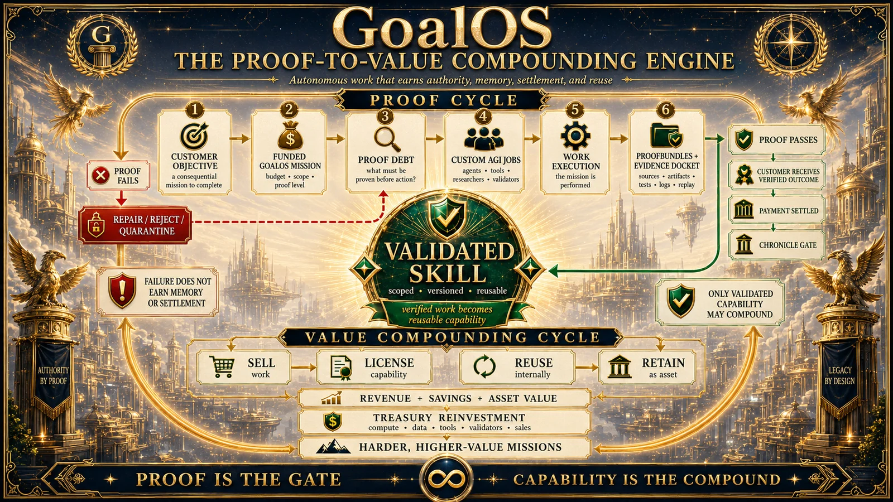

Objectif
Résultat, principal, critères et conditions d’arrêt.
GoalOS · doctrine canonique 1.0
L’IA produit des sorties. GoalOS décide ce qui mérite confiance, mémoire, règlement, réutilisation et influence sur la mission suivante.
Les boucles opérationnelles de l’intelligence autonome
Le catalogue de tâches est vide par conception. Chaque mission crée les emplois nécessaires pour rembourser sa propre dette de preuve. L’exploration peut avancer rapidement; les actions conséquentes exigent une preuve plus forte et une autorité exacte.
Résultat, principal, critères et conditions d’arrêt.
Contrat et enveloppe d’autorité.
Affirmations non soutenues rendues explicites.
Travail borné créé à la demande.
Provenance, essais, échecs et droits.
Objet inspectable pour contestation.
Admission, refus, réparation ou révocation.
Transfert frais sous contraintes égales ou plus strictes.
La séparation constitutionnelle
Cette séparation protège la souveraineté du client et empêche que l’exécution, la validation, l’acceptation, la mémoire et le règlement deviennent une seule décision opaque.
Effectuent un travail borné dans une autorité déléguée.
Rejouent, attaquent et rendent un verdict limité.
Inscrit ACCEPTER, RÉPARER ou REJETER.
Décide ce qui peut influencer l’avenir.
Exécutent uniquement les conséquences autorisées.
Graphe institutionnel
Les nœuds travaillent. Les arêtes portent une signification déclarée. Les validateurs contestent. Les autorités permettent. Les preuves enregistrent la réalité. Chronicle gouverne la mémoire.
Preuve publique · capacité privée
Le mode local prépare des paquets de transfert. La signature de portefeuille, l’entiercement, les obligations, les litiges, les sanctions et le règlement demeurent hors du mode local jusqu’à activation séparée.
Série canonique GoalOS 1.0
Ces publications décrivent une architecture de recherche et d’implémentation. Elles ne revendiquent ni AGI/ASI atteinte, ni SOTA empirique, ni certification juridique, ni règlement en direct, ni autorité de production.
La couche opérationnelle qui convertit les objectifs en contrats de mission, dette de preuve, AGI Jobs, ProofBundles, Evidence Dockets, décisions Chronicle et paquets de transfert vers le réseau principal.
Ouvrir la publication →Capsules de compétences chiffrées, autorité ENS délimitée, engagements et preuves de politique pour une capacité réutilisable gouvernée.
Ouvrir la publication →Notes de terrain sur les machines qui transforment le travail en capacité par une mémoire institutionnelle gouvernée par la preuve.
Ouvrir la publication →Une racine d’époque lie compétences, preuves, ProofBundles, politiques et attestations afin de gouverner l’héritage des missions futures.
Ouvrir la publication →Le système opératoire canonique de la preuve vers la capacité pour le travail autonome.
Ouvrir la publication →La doctrine opérationnelle reliant objectif, mission de preuve, AGI Jobs, preuve, Chronicle, capacité validée et amélioration future.
Ouvrir la publication →La loi canonique
L’horizon est une institution qui devient plus capable sans devenir son propre juge final.
Œuvre source sélectionnée · 17 juillet 2026
La planche phare de l’archive fournie cartographie la relation visée entre un objectif financé, la dette de preuve, des AGI Jobs bornés, les ProofBundles, le dossier de preuve, l’acceptation responsable du client, l’admission dans Chronicle, la capacité validée et le réinvestissement dans une mission plus difficile.

d21cf5ae5143ac6f04626971f53c8afad64d5d45de50c7f304fcc7f650a7f766.{kind=link}